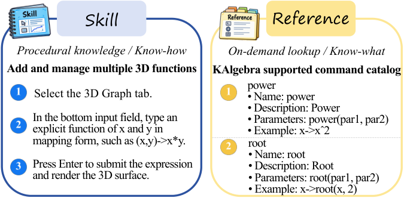
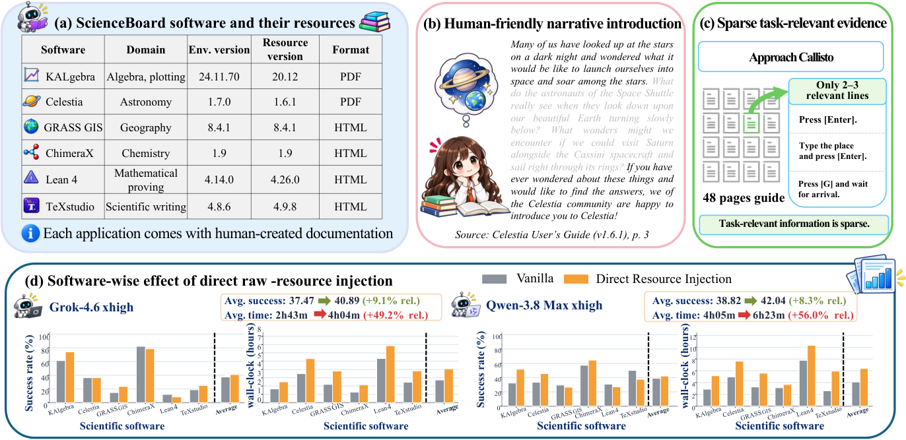

Lean 4 (v4.14.0) is one of six scientific applications. Agents solve formal-proof tasks in it, and the authors audited and added Lean benchmark tasks.
Abstract
Computer-use agents for scientific software require application-specific expertise. Much of this expertise is documented in human-authored software manuals and web pages. However, turning these resources into executable, reusable skills remains challenging due to mismatches between documented and deployed software versions and differences in scope between documentation coverage and task requirements. We introduce ScienceCUA, a two-stage framework combining resource-to-skill construction with execution-guided skill evolution. First, ScienceCUA identifies tasks supported by the software from its documentation, infers operational trajectories, and generalizes them into reusable Skills. Command catalogs, syntax constraints, and shortcuts are organized separately as References for on-demand lookup. Then, ScienceCUA uses execution feedback to drive skill self-evolution by contrasting successful and failed trajectories for the same task, identifying deficiencies, revising existing skills or adding new ones, and updating the skill library only after repeated validation in real environments. To enable reliable evaluation without benchmark noise or task leakage, we introduce two improved benchmarks. ScienceBoard-Verified provides an audited and corrected basis for measuring task performance, while ScienceBoard-VE separates skill evolution from final testing through disjoint evolution and test tasks and further supports native-agent evaluation. Experiments show that the initial Skills and References improve average task success rate by up to 7.23 percentage points over the base model, while skill self-evolution increases the total gain over the baseline to as much as 17.12 percentage points. ScienceCUA turns software documentation into an evolving set of executable skills and queryable references, offering a practical way for general-purpose agents to use scientific software reliably and at scale.
Problem
Computer-use agents operating scientific software need application-specific knowledge. That knowledge sits in human-oriented manuals that may not match the deployed software version or the scope of the tasks. Directly injecting the documentation yields limited gains and raises execution time.
Approach
ScienceCUA converts documentation into reusable task-level Skills and queryable References covering commands, syntax and constraints. It then evolves this library by contrasting successful and failed trajectories, updating it only after repeated validation in real environments. The authors audited the ScienceBoard benchmark (six applications including Lean 4) to form ScienceBoard-Verified with 168 tasks. They also added 108 disjoint evolution tasks, 20 of them Lean 4, to form ScienceBoard-VE, which supports native-agent evaluation.

Figure 3: An example in KAlgebra: a procedural Skill for plotting 3D functions (left) and a Reference cataloging supported commands (right).
Results
Initial Skills and References improve average success by up to 7.23 points over the base model. Skill self-evolution raises the total gain to as much as 17.12 points. Lean 4 tasks remain among the hardest, because they require specialized formal proofs that the general theorem-proving guide rarely supplies.

Figure 2: Motivation for resource-to-skill construction. (a) Scientific applications and their resources. (b) Human-oriented narrative content. (c) Sparse task-relevant information. (d) Effects of directly injecting raw resources on success rate and total execution time.
Method
KAlgebra
Lean 4
TeXstudio
Average
Vanilla
32.26
30.77
50.00
38.82
RAG
38.71
30.77
50.00
40.29
Direct injection
51.61
26.92
37.50
42.04
ScienceCUA
51.61
30.77
56.25
45.27
Success rates (%) on ScienceBoard-Verified, Qwen-3.8 Max (xhigh), model-based evaluation